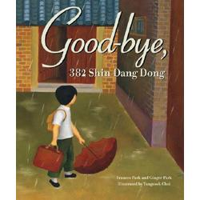
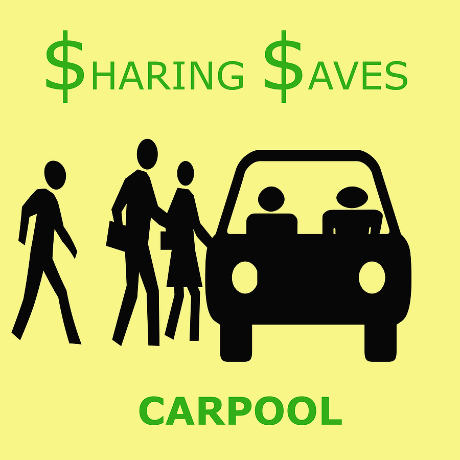
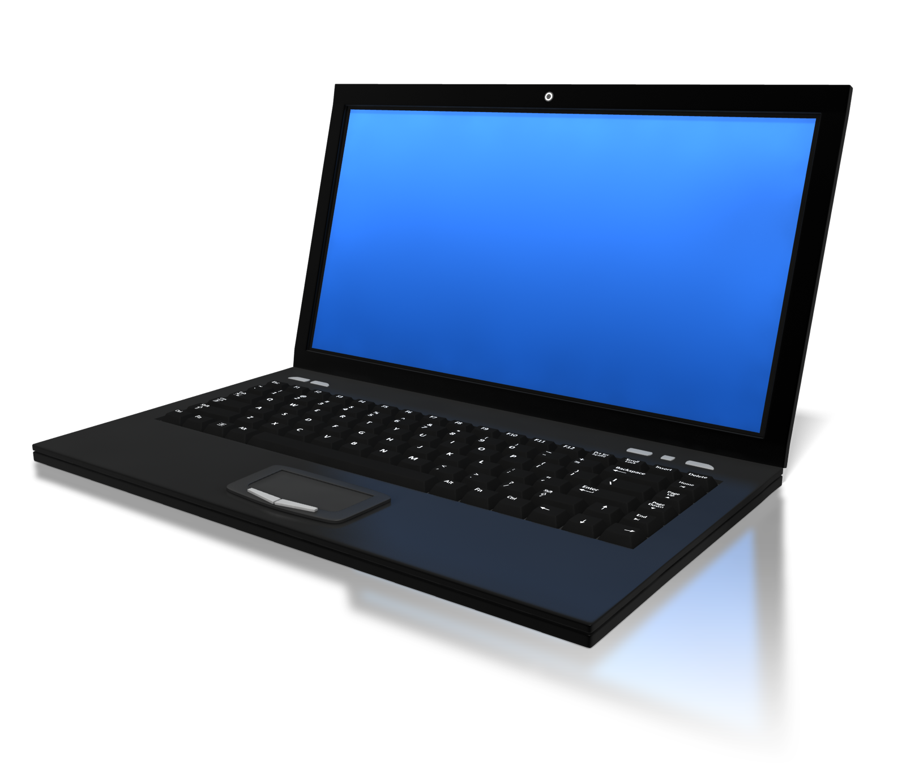
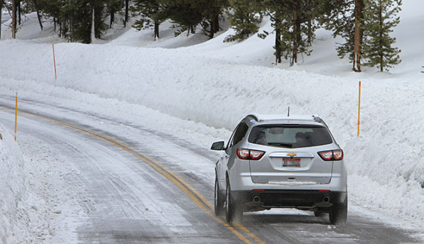

Process Book No. 3 (WIP in terms of aesthetics)
Mkae it so that the lists are dictionary format to make questions distinct from answers
Transitions I have experienced
- Moving to a different country
- Beginning: South Korea
- Middle: Airplane/Japan
- End: United States
- Benefits: Learning English
- Challneges: Learning English
- How could the transition been made better?: If I knew more English

- Getting more fit
- Beginning: Very unfit. Can barely run a mile
- Middle: somewhat fit
- End: There is no end?
- Benefits: Becoming healthier, losing weight to healthy standards
- Challneges: making myself to work out regularly
- How could the transition been made better?: if I didn't have to worry about homework I would be at the gym more

- Bus to car
- Beginning: Most of middle school and high school when I took bus to school
- Middle: Summer when friend got driver's license and car
- End: Carpooling to high school for 2 years
- Benefits: I got to sleep a bit more. Especially when my friend would drive to school while I was sleeping
- Challneges: Paying back my friend for his kindness
- How could the transition been made better?: It was actually perfect. Maybe if I was able to memorize lyrics more so I could sing along with my friend.

- Having desktop only to having laptop
- Beginning: only family desktop
- Middle: using dad's laptop
- End: stealing dad's laptop for my own
- Benefits: I became more productive in doing school work that I had to do on computer. Since I didn't have to rely on my family not using the computer.
- Challneges: Slowly taking the laptop from my dad. Increasing my use time little by little was tedious and time consuming.
- How could the transition been made better?: If I just had enough money to buy my own laptop or desktop. Laptop was better for portability however.

- Traveling to Yellowstone
- Beginning: Issaquah
- Middle: Leavenworth (at least that's what I think was middle)
- End: Yellowstone
- Benefits: Got to see Yellowstone in winter. Animals were cool and the hot springs and geysers were also really cool.
- Challneges: It was really long drive to Yellowstone. My gameboy ran out of battery and I definitely finished whatever book I was reading halfway there. I spent quite a time just sleeping in the car. Also I was not prepared for how cold Yellowstone was going to be and my feet were freezing.
- How could the transition been made better?: If we took an airplane there. That would've solved so many problems. I guess my dad likes driving or something.

Contact: shl7 uw.edu
uw.edu